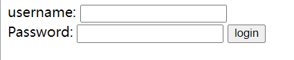
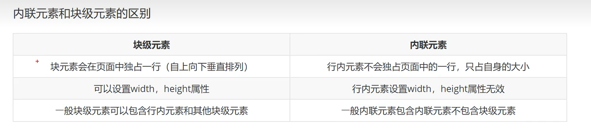
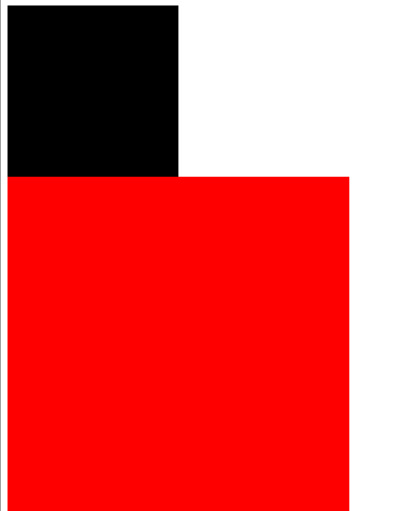

前端:html5 css js
HTML5
标签
1 |
声明
基础骨架标签
1 | <html></html> |
标题标签
1 | <h1></h1> |
h1最重要,h6最不重要
位置设置
1 | <h1 align="left">one</h1> |
默认left
段落标签
1 | <p></p> |
图片标签
1 | <img src="" alt="" width="" height="" title=""> |
超文本链接
1 | <a href=url>名称</a> |
没点过是蓝色,点过变成紫色
文本标签
显示不一样的文字,与段落标签不同,文本标签仅仅是为了词汇文本,可以嵌套
1 | <em> em klklkl</em> //着重 斜体 |

列表标签
有序列表
1 | <ol> |

1 | <ol type=""> |
type可以为: 1, a, A, i, I
可以嵌套
1 | <li>2st line |
无序列表
1 | <ul> |
1 | <ul type="">// disc默认实心圆 circle空心圆 square小方块 none不显示 |
和有序标签一样可以嵌套
可以实现导航效果(css)
表格标签
1 | 表格:<table> |
1 | <table> |

1 | 快速生成表格:table>tr*[num]>td*[num]{内容} |
表格属性
1 | <table [属性]="" [属性]="" [属性]=""> |
常用属性
border : 边框
width :宽度
height :高度
表格单元格合并
水平合并: colspan 保留左边删除右边
垂直合并: rowspan 保留上边删除下边
1 | <tr clospan="[num]"></tr> |
容器标签
1 | <div > </div> |
分区


但是,H5新标签对浏览器有要求
Form表单
用户输入,使网页具有交互性,例如: 登录注册 搜索框
容器+控件
1 | <form action="" method="" name="" > </form> |
- action:服务器地址
- method:数据的提交方式 get / post
- name:表单名称
表单元素
表单标签 表单域 表单按钮
1 | <form action="" method="" name="" > |

文本框
文本域通过
<input type="text">标签进行设定,当用户需要向表单中键入字母 数字等内容时,会用到文本域
1 | <form method="" name="" > |

密码框
<input type="password">进行设定,密码字段字符不会明文显示,而是以星号或者圆点替代
1 | <form method="" name="" > |

提交按钮
用户点击确认按钮的时候,表单的内容会被传送到另一个文件,表单的动作属性定义了目的文件的文件名,由动作属性定义的这个文件会对接收到的输入进行相关处理
1 | <form method="" name="" > |

块级元素与行内元素(内联元素)

常见的块级元素
div form h1-h6 hr p table ul ol …
常见行内元素
a b em i span strong…
行内快级元素(特点:不换行 能够识别宽高)
button img input …
CSS
美化器
语法
选择器 + 声明(样式)
选择器选择HTML元素,一个声明由一个属性和一个值组成
1 | <style> |
引入方式
内联样式
在head中进行书写,对head所在的网页的元素进行设置
1 |
|
当网页跳转后,样式设置会失效
内部样式
1 | <h3 style="color: blue;"> title </h3> |
外部样式

1 | <link rel="stylesheet" href="./try.css"> |
在head标签中书写,表示对整个网页应用href的样式
选择器
全局选择器
可以与任何元素匹配,优先级最低,一般做样式的初始化
1 | *{ |
元素选择器
p b div a img body
1 | span{ |
1 |
|
所有的标签都可以是选择器
选择的是所有
类选择器
规定用圆点来定义,针对你想要的所有标签使用,较为灵活
1 | .content{ |
1 |
|
- 类选择器可以被多种标签使用
- 类名不能以数字开头
- 同一个标签可以使用多个类选择器,用空格隔开
1 | .content{ |
ID选择器
针对某一个特定的标签来使用,只能使用一次,以
#定义,id只能重复一次
1 |
|
合并选择器
提取共同的样式,减少代码重复
语法:选择器1,选择器2…{}
1 |
|
优先级
| 选择器类型 | 格式 | 权重 |
|---|---|---|
| 全局 | * | |
| 元素 | 标签名字 | 1 |
| 类 | claa名字(.) | 10 |
| ID | id名字(#) | 100 |
行内样式>ID选择器>类选择器>元素选择器,相同优先级后写的生效
字体属性
颜色 大小 加粗 文字样式
color
1 | color:red; |
font-size
字体大小
1 | font-size:100px; |
chorm浏览器接受的最小字体是12px
font-weight
字体粗细
1 | font-weight:[value]; |
| 值 | 描述 |
|---|---|
| bold | 粗体 |
| bolder | 更粗 |
| lighter | 更细 |
| 100-900 | 由细到粗 400为默认 700等价于bold |
font-style
字体样式
1 | font-style:[value]; |
| 值 | 样式 |
|---|---|
| normal | 默认值 |
| italic | 斜体 |
font-family
指定元素字体
1 | font-family: "微软雅黑"; |
背景属性
background-color
1 |
|
background-image
设置元素背景图片
1 |
|
background-repeat
设置如何平铺图像
| 值 | 说明 |
|---|---|
| repeat | 默认值 |
| repeat-x | 只水平方向平铺 |
| repeat-y | 只垂直方向 |
| no-repeat | 不平铺 |
1 |
|
background-size
1 | background-size:100px,100px; |

background-position
设置图像的起始位置,默认为 0 % 0%
文本属性
text-align
指定文本的对齐方式
text-decoration
上划线 下划线 删除线等
text-transform
控制文本大小写
text-indent
规定文本块首行文本缩进
表格属性
表格边框
1 | table,td{ |
折叠边框
让表格被单一的边框隔开
1 | table{ border-collapse:collapse ;} |
大小
1 | table{ width:100px ; |
表格文字对齐方式
1 | td{text-align:center; } |
表格填充
控制空格之间的边框
1 | td{padding:15px; } |
表格颜色
关系选择器
后代选择器
1 | E F{} |
1 | <!DOCTYPE html> |
子代选择器
1 | E>F{} |
选择E标签的直接子代标签
1 | <!DOCTYPE html> |
相邻兄弟选择器
1 | E+F{} |
选择E相邻的F标签,只能向下选择
1 |
|
通用兄弟选择器
1 | E~F{} |
选择E下面所有为F标签的兄弟元素
1 |
|
盒子模型
弹性盒模型
弹性盒子由弹性容器(Flex container)和弹性子元素(Flex item)组成。
弹性容器通过设置 display 属性的值为 flex 或 inline-flex将其定义为弹性容器。
弹性容器内包含了一个或多个弹性子元素。
弹性子元素在弹性盒子内默认横向摆放
1 | <!DOCTYPE html> |
弹性容器的属性
flex-direction
决定弹性项目的主轴方向（水平或垂直）：
-
row：主轴为水平方向，项目从左到右排列（默认值）。 -
row-reverse：主轴为水平方向，项目从右到左排列。 -
column：主轴为垂直方向，项目从上到下排列。 -
column-reverse：主轴为垂直方向，项目从下到上排列。1
2
3
4
5
6
7.container{
width:500px;
height:500px;
background-color: black;
display:flex;
flex-direction: column;
}
justify-content
控制弹性项目在主轴上的对齐方式(垂直方向上进行控制)：
flex-start：项目向主轴起点对齐。(默认)flex-end：项目向主轴终点对齐。center：项目在主轴上居中。space-between：项目在主轴上均匀分布，第一项靠起点，最后一项靠终点。space-around：项目在主轴上均匀分布，项目两侧有相同的间距。
1 | .container{ |
align-items
控制弹性项目在交叉轴（与主轴垂直的轴）上的对齐方式(水平方向进行控制)：
-
stretch：默认值，项目在交叉轴上拉伸以填满容器（如果未设置固定高度）。 -
flex-start：项目向交叉轴的起点对齐。 -
flex-end：项目向交叉轴的终点对齐。 -
center：项目在交叉轴上居中。1
2
3
4
5
6
7
8
9.container{
width:500px;
height:500px;
background-color: black;
display:flex;
flex-direction: column;
justify-content: center;
align-items: center;
}
flex-wrap
控制弹性项目是否换行：
nowrap：项目不换行，超出容器的内容会溢出（默认值）。wrap：项目自动换行。
弹性项目的属性
flex-grow
控制项目的放大比例，如果所有项目的 flex-grow 为1，它们将等比例分配剩余空间。
优先级大于宽度的优先级
flex-shrink
控制项目的缩小比例，当容器空间不足时，项目将按该比例缩小。
flex-basis
定义了项目在主轴方向上的初始大小。
浮动
CSS中的浮动（
float）是一种用于布局的机制，可以将元素从正常的文档流中取出，使其在容器的左侧或右侧浮动。浮动元素允许文本和其他内联元素环绕在其周围，常用于实现文本环绕图片、多列布局等效果。
基本语法
1 | .element { |
1 | <!DOCTYPE html> |

设置为浮动之后
1 | <!DOCTYPE html> |
浮动元素脱离了文档流,在上层显示
float 属性的值
left：元素向左浮动，后续内容环绕在元素的右侧。可以利用此点让元素横向摆放right：元素向右浮动，后续内容环绕在元素的左侧。none：默认值，元素不浮动，遵循正常的文档流。inherit：继承父元素的浮动属性。
浮动的特点
- 脱离文档流：浮动元素不占据正常文档流的位置，后续的块级元素会忽略它的存在。
- 文本环绕：内联元素（如文本）会围绕在浮动元素的周围。
- 影响父容器高度：如果父容器内的所有子元素都浮动，父容器的高度可能会塌陷为0。
- 当容器不足以横向摆放时会放到下一行
- 只有左右浮动没有上下
清除浮动
由于浮动元素会影响后续元素的布局，常需要清除浮动以恢复正常的文档流。使用 clear 属性可以指定元素的哪一侧不允许浮动元素。
1 | .element { |
left：元素的左侧不允许有浮动元素。right：元素的右侧不允许有浮动元素。both：元素的左右两侧都不允许有浮动元素。none：默认值，允许浮动元素出现在两侧。
常用方法
-
添加清除元素
1
2
3
4
5
6
7
8
9
10<div class="container">
<div class="float-element"></div>
<div class="clear"></div>
</div>
<style>
.clear {
clear: both;
}
</style> -
使用伪对象清除浮动
1
2
3
4
5.container::after {
content: "";
display: table;
clear: both;
} -
使用
overflow属性(使用较多)1
2
3
4.container {
overflow: hidden;
clear:both;
}
示例
图片左浮动，文字环绕
1 | <img src="image.jpg" alt="示例图片" style="float: left; margin-right: 10px;"> |
TIPS:
- 父容器高度塌陷：如果所有子元素都浮动，父容器可能会高度塌陷，需要清除浮动。
- 布局复杂性：过度使用浮动可能导致布局混乱，现代布局中更推荐使用 Flexbox 或 Grid。
- 兼容性：浮动在所有主流浏览器中都得到良好支持，但在响应式设计中需要谨慎使用。
定位
CSS 中的定位（Positioning）用于确定 HTML 元素在页面上的布局位置。定位方式有多种，分别适用于不同的场景。常见的定位方式有以下五种：
静态定位（static）
- 默认值：每个 HTML 元素默认使用
static定位。 - 特点：
- 不进行特殊定位，元素按照文档流正常排列。
- 元素不会受
top、right、bottom、left属性的影响。
示例：
1 | div { |
相对定位（relative）
- 特点：
- 元素相对于它在文档流中的正常位置进行定位。
- 使用
top、right、bottom、left来偏移元素，但元素仍然占据原本的空间。 - 相对定位不会影响其他元素的位置。
示例：
1 | div { |
绝对定位（absolute）
- 特点：
- 元素相对于 最近的非
static定位的祖先元素（或视口，如果没有这样的祖先元素）进行定位。 - 元素会脱离文档流，其他元素会忽略它的存在。
- 可以通过
top、right、bottom、left属性精确控制位置。
- 元素相对于 最近的非
示例：
1 | div { |
固定定位（fixed）
- 特点：
- 元素相对于 浏览器视口 进行定位，即使页面滚动，元素的位置也不会发生变化。
- 元素脱离文档流，类似
absolute定位。 - 常用于创建固定导航栏或浮动按钮。
示例：
1 | div { |
粘性定位（sticky）
- 特点：
- 元素在页面滚动时表现为 相对定位，当滚动到特定位置后则表现为 固定定位。
- 通过
top、right、bottom、left指定何时触发固定定位。 - 常用于创建粘性导航栏或某些随页面滚动的 UI 元素。
示例：
1 | div { |
堆叠顺序（z-index）
- 当元素使用
relative、absolute、fixed或sticky定位时，可以通过z-index属性控制元素的堆叠顺序。 z-index值越大，元素越靠前。- 只对定位元素生效。
示例：
1 | div { |
定位方式的对比：
static：默认，不参与定位，元素按文档流正常排列。relative：相对自身位置的偏移，仍在文档流中占位。absolute：脱离文档流，相对于最近的非static祖先定位。fixed：相对于视口定位，脱离文档流，页面滚动时位置不变。sticky：结合相对与固定定位，滚动到指定位置后固定。
相对定位和绝对定位是相对 具有定位的父级元素 进行位置调整,如果父级元素不存在定位,则逐级向上寻找,直到顶层文档
css新特性
圆角border-radius
1 | .containner{ |
阴影box-shadow
1 | .containner{ |
动画
让元素从一种样式逐渐变成另一种样式
雪碧图
字体图标
JavaScript
JavaScript 是一种轻量级、解释型的编程语言，主要用于开发网页前端功能。
基础知识
变量
var
let：声明一个可以改变的变量。
const：声明一个不可重新赋值的常量。
1 | var num = 10;//用var声明 |
输出方式
弹出框
1 | alert("我是弹出框"); |
页面输出
1 | document.write("我是输出到页面"); |

控制台输出(常用)
1 | console.log(num) |
变量提升
变量提升（Hoisting）是 JavaScript 的一个默认行为，它将变量声明提升到其作用域的顶部，换句话说，在代码执行之前，JavaScript 会将变量声明（而不是赋值）提升到作用域的顶部。
使用 var 进行变量声明
当你使用 var 声明变量时，JavaScript 会将变量声明提升到当前作用域的顶部，但不会提升赋值部分。如下例子：
1 | console.log(a); // 输出 undefined |
上面的代码在执行时，实际上相当于这样：
1 | var a; // 变量声明被提升到了顶部 |
let 和 const 不存在提升（或提升但不能使用）
在 let 和 const 声明的变量中，虽然也有提升，但它们会被暂时锁定在一个“暂时性死区”（Temporal Dead Zone，TDZ）中，在声明之前访问它们会导致错误：
1 | console.log(b); // ReferenceError: Cannot access 'b' before initialization |
这里，变量 b 是在它的声明之前访问的，JavaScript 引擎会抛出错误，因为 let 和 const 变量在声明之前是不可访问的。
函数提升
函数声明也会被提升，并且它们会在整个作用域内都可以使用：
1 | greet(); // 输出 "Hello" |
上面的代码会正常工作，因为函数声明也会被提升到作用域的顶部。
tips:
var变量提升：变量声明被提升，但赋值不会被提升，未赋值时默认值为undefined。let和const：变量声明提升但在“暂时性死区”内，无法在声明前访问。- 函数声明提升：完整的函数声明会被提升，但函数表达式不会。
数据类型
JavaScript 支持多种数据类型：
- 原始类型：
Number（数字），String（字符串），Boolean（布尔值），null，undefined，Symbol。 - 复杂类型：
Object，包括数组、函数等。
1 | let num = 42; // Number |
null 和 undefine 没有什么特殊意思,只是表示空
js引入到文件
嵌入HTML文件中
1 | <body> |
引入本地独立js文件
1 | <body> |
引入网络来源文件
1 | <head> |
typeof运算符
判断基本数学类型
1 | let x = 42; |
- 对于
null，typeof null返回"object"，这是一个已知的语言设计问题，通常可以通过额外的检查来处理。 typeof可以用来动态检查变量类型，避免某些类型相关的错误。
算术运算符
| 运算符 | 名称 | 描述 | 示例 | 结果 |
|---|---|---|---|---|
+ |
加法 | 两个值相加 | 5 + 3 |
8 |
- |
减法 | 两个值相减 | 5 - 3 |
2 |
* |
乘法 | 两个值相乘 | 5 * 3 |
15 |
/ |
除法 | 两个值相除 | 9 / 3 |
3 |
% |
取模（余数） | 除法的余数 | 10 % 3 |
1 |
++ |
自增 | 变量的值增加1，前置（++x）或后置（x++） |
x++ |
x = 6 |
-- |
自减 | 变量的值减小1，前置（--x）或后置（x--） |
x-- |
x = 4 |
** |
幂运算 | 表示某个数的幂（指数） | 2 ** 3 |
8 |
- |
负号 | 取负数 | -x |
-5 |
tips:
- 自增/自减运算符（
++/--）：可以放在变量前面或后面。前置自增/自减会先执行运算，再返回值；后置则先返回值，再执行运算。 - 取模运算符（
%）：返回除法的余数，常用于判断奇偶性或循环中的边界条件。
赋值运算符
| 运算符 | 名称 | 描述 | 示例 | 结果 |
|---|---|---|---|---|
= |
简单赋值 | 将右侧的值赋给左侧的变量 | x = 5 |
x = 5 |
+= |
加法赋值 | 将右侧的值加到左侧的变量上，并将结果赋给左侧变量 | x += 3 |
x = x + 3 |
-= |
减法赋值 | 将右侧的值从左侧的变量中减去，并将结果赋给左侧变量 | x -= 3 |
x = x - 3 |
*= |
乘法赋值 | 将左侧变量与右侧的值相乘，并将结果赋给左侧变量 | x *= 3 |
x = x * 3 |
/= |
除法赋值 | 将左侧变量除以右侧的值，并将结果赋给左侧变量 | x /= 3 |
x = x / 3 |
%= |
取模赋值 | 将左侧变量除以右侧的值，赋值为余数 | x %= 3 |
x = x % 3 |
**= |
幂赋值 | 将左侧变量取右侧值的幂，并将结果赋给左侧变量 | x **= 2 |
x = x ** 2 |
<<= |
左移赋值 | 将左侧变量的二进制表示左移指定的位数，并赋值给左侧变量 | x <<= 2 |
x = x << 2 |
>>= |
右移赋值 | 将左侧变量的二进制表示右移指定的位数，并赋值给左侧变量 | x >>= 2 |
x = x >> 2 |
>>>= |
无符号右移赋值 | 将左侧变量的二进制表示无符号右移指定的位数，赋值给左侧 | x >>>= 2 |
x = x >>> 2 |
&= |
按位与赋值 | 将左侧变量与右侧值进行按位与运算，并将结果赋值给左侧变量 | x &= 3 |
x = x & 3 |
| ` | =` | 按位或赋值 | 将左侧变量与右侧值进行按位或运算，并将结果赋值给左侧变量 | `x |
^= |
按位异或赋值 | 将左侧变量与右侧值进行按位异或运算，并将结果赋值给左侧变量 | x ^= 3 |
x = x ^ 3 |
说明：
- 复合赋值运算符（如
+=、-=等）：先执行对应的算术运算，再赋值给左侧变量。 - 位移赋值运算符：适用于二进制数的位运算操作，通常用于低级别的优化或位操作。
比较运算符
| 运算符 | 名称 | 描述 | 示例 | 结果 |
|---|---|---|---|---|
== |
相等 | 比较两个值是否相等（不比较类型，值相等即可） | 5 == "5" |
true |
=== |
严格相等 | 比较两个值及其类型是否严格相等 | 5 === "5" |
false |
!= |
不相等 | 比较两个值是否不相等（不比较类型） | 5 != "5" |
false |
!== |
严格不相等 | 比较两个值及其类型是否严格不相等 | 5 !== "5" |
true |
> |
大于 | 判断左侧值是否大于右侧值 | 10 > 5 |
true |
< |
小于 | 判断左侧值是否小于右侧值 | 10 < 5 |
false |
>= |
大于等于 | 判断左侧值是否大于或等于右侧值 | 10 >= 10 |
true |
<= |
小于等于 | 判断左侧值是否小于或等于右侧值 | 10 <= 9 |
false |
说明：
- 相等运算符 (
==)：只比较值，类型不同但能转换的也会判定为相等（如数字5和字符串"5"相等）。 - 严格相等运算符 (
===)：同时比较值和类型，只有值和类型都相同时才判定为相等。 - 不相等运算符 (
!=) 和严格不相等运算符 (!==)：分别是相等和严格相等的反向判断。 - 大小比较运算符 (
>、<、>=、<=)：用于比较数值大小，也可比较字符串（按字母顺序比较）。
条件语句
JavaScript 中的条件语句用于根据表达式的布尔值（
true或false）来执行不同的代码。常见的条件语句包括if、else if、else和switch语句
if 语句
if 语句用于在某个条件为 true 时执行代码。
1 | if (condition) { |
示例：
1 | let age = 18; |
if...else 语句
if...else 语句在条件为 true 时执行 if 块的代码，条件为 false 时执行 else 块的代码。
1 | if (condition) { |
示例：
1 | let age = 16; |
else if 语句
else if 语句用于处理多个条件。在第一个条件为 false 时，依次检查其他条件，直到找到一个为 true 的条件。
1 | if (condition1) { |
示例：
1 | let score = 85; |
switch 语句
switch 语句用于基于一个变量或表达式的值，在多个可能的值中执行相应的代码块。
1 | switch (expression) { |
示例：
1 | let day = 3; |
循环语句
for 循环
for 循环用于在指定次数内重复执行代码块，通常用于已知次数的循环。
语法：
1 | for (initialization; condition; update) { |
initialization：初始化变量。condition：循环条件，条件为true时继续执行。update：每次循环结束后更新变量的表达式。
示例：
1 | for (let i = 0; i < 5; i++) { |
while 循环
while 循环在条件为 true 时重复执行代码块。适用于循环次数不确定的情况。
语法：
1 | while (condition) { |
示例：
1 | let i = 0; |
do...while 循环
do...while 循环至少执行一次代码块，然后根据条件决定是否继续执行。适用于至少需要执行一次的情况。
语法：
1 | do { |
示例：
1 | let i = 0; |
for...in 循环
for...in 循环用于遍历对象的可枚举属性。
语法：
1 | for (let key in object) { |
示例：
1 | let person = {name: "Alice", age: 25}; |
for...of 循环
for...of 循环用于遍历可迭代对象（如数组、字符串、集合等）的值。
语法：
1 | for (let value of iterable) { |
示例：
1 | let numbers = [1, 2, 3, 4, 5]; |
break 和 continue
break：用于终止循环。continue：用于跳过当前循环的剩余部分，继续执行下一次循环。
示例（break）：
1 | for (let i = 0; i < 5; i++) { |
示例（continue）：
1 | for (let i = 0; i < 5; i++) { |
总结：
for循环：用于已知次数的循环。while循环：用于未知次数的循环，条件前检查。do...while循环：至少执行一次，条件后检查。for...in循环：遍历对象的属性。for...of循环：遍历可迭代对象的值。break和continue：用于控制循环的执行。
字符串
length方法
返回字符串的字符数。
1 | const str = "Hello"; |
charAt方法
返回字符串指定位置的字符
1 | var str = "0123456789"; |
传入数字超出字符串的话会返回空字符串
concat方法
连接两个或多个字符串，并返回一个新字符串。并且不改变原来字符串,如果传入的非字符串,会将其转化为字符串再连接
str1.concat(str2, str3, …, strN);
1 | const str1 = "Hello"; |
也可以使用+号进行字符串的连接
substring方法
提取字符串中两个指定索引之间的字符，并返回一个新字符串。
str.substring(start, end);
start：提取的起始索引（包含）。
end：提取的结束索引（不包含）。如果省略，默认为字符串的结束。
1 | const str = "Hello, World!"; |
-
负索引处理：
substring()不支持负索引，负数会被转换为 0。1
console.log(str.substring(-3, 5)); // "Hell"（起始变为 0）
-
参数顺序：如果
start大于end，则这两个参数会互换。1
console.log(str.substring(5, 0)); // "Hello"
-
不修改原字符串：
substring()不会修改原始字符串，始终返回一个新字符串。
substr方法
从一个字符串中提取指定长度的子字符串，并返回该子字符串。与
substring()和slice()方法不同，substr()需要提供提取的起始索引和子字符串的长度
1 | str.substr(start, length); |
1 | const str = "Hello, World!"; |
-
负索引：可以使用负数作为起始索引，从字符串的末尾开始提取。
1
console.log(str.substr(-6, 5)); // "World"
-
不修改原字符串：
substr()不会改变原始字符串，始终返回一个新字符串。 -
长度参数的处理：如果
length为负数或零，则返回空字符串。1
console.log(str.substr(0, 0)); // ""
indexOf方法
用于返回指定值在字符串中第一次出现的位置。如果未找到该值，则返回 -1。它是区分大小写的。
1 | str.indexOf(searchValue, fromIndex); |
1 | const str = "Hello, World!"; |
-
区分大小写：
indexOf()是区分大小写的，因此查找 “hello” 和 “Hello” 会返回不同的结果。1
console.log(str.indexOf("hello")); // -1
-
从指定位置开始查找：可以通过
fromIndex参数指定查找的起始位置。如果指定的索引大于或等于字符串的长度，则返回 -1。1
console.log(str.indexOf("o", 10)); // -1
-
返回的索引：如果找到匹配项，返回的是第一个匹配字符的索引（从 0 开始计数）。
trim方法
用于去除字符串两端的空格（包括空格、制表符和换行符），并返回一个新的字符串。它不会改变原始字符串，因为字符串在 JavaScript 中是不可变的。
语法
1 | str.trim(); |
示例
1 | const str = " Hello, World! "; |
特点
-
去除两端空格：
trim()只去除字符串开头和结尾的空格，字符串中间的空格不会被去除。1
2const str2 = " Hello, World! ";
console.log(str2.trim()); // "Hello, World!" -
不修改原字符串：
trim()方法返回一个新字符串，原始字符串不受影响。1
console.log(str); // " Hello, World! "
-
兼容性：
trim()是 ECMAScript 5（ES5）引入的，因此在现代浏览器和环境中广泛支持。
相关方法
trimStart()（或trimLeft()）：去除字符串开头的空格。trimEnd()（或trimRight()）：去除字符串结尾的空格。
示例
1 | const str = " Hello, World! "; |
trim() 方法在处理用户输入或清理数据时非常有用。如果你有具体的用例或问题，请告诉我！
split方法
split()方法用于将一个字符串分割成一个字符串数组，基于指定的分隔符。这个方法返回一个新数组，原始字符串不受影响。
语法
1 | str.split(separator, limit); |
- separator：用于分隔字符串的字符、正则表达式或字符串。如果省略，则整个字符串作为单一元素返回。
- limit（可选）：一个整数，指定返回的数组的最大长度。
示例
1 | const str = "Hello, World!"; |
特点
-
多种分隔符：可以使用任意字符或正则表达式作为分隔符。
1
2
3const str2 = "one,two;three four";
const result2 = str2.split(/[,; ]/); // 使用正则表达式分割
console.log(result2); // ["one", "two", "three", "four"] -
限制返回元素数量：
limit参数可以限制返回的数组长度。1
2const str3 = "a,b,c,d,e";
console.log(str3.split(",", 3)); // ["a", "b", "c"] -
返回的数组：如果字符串中没有找到分隔符，返回的数组将只包含一个元素，即原始字符串。
1
2const noSeparator = "Hello";
console.log(noSeparator.split(",")); // ["Hello"]
使用场景
split() 方法常用于处理和解析字符串数据，比如从 CSV 文件中提取数据、处理用户输入等。
如果你对 split() 有更具体的问题或想了解其他相关内容，请告诉我！